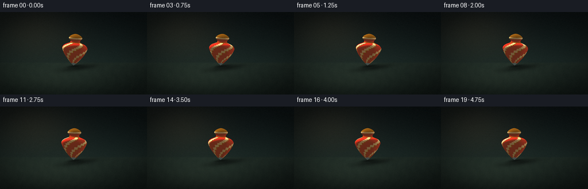
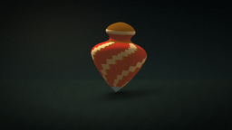
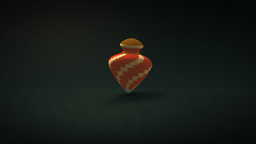
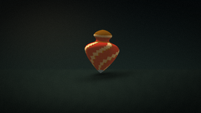
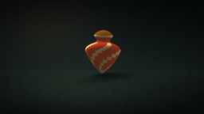
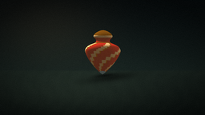
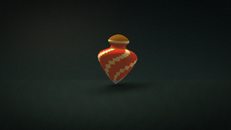
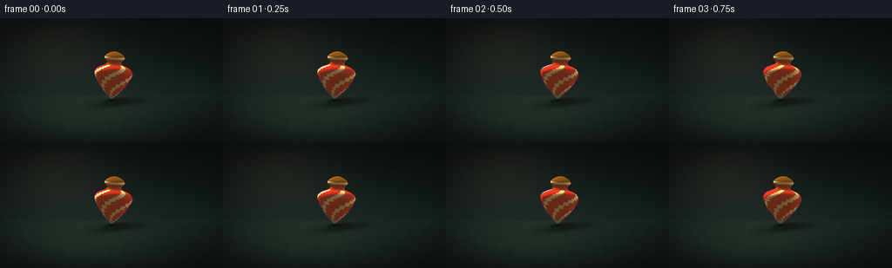

CODING AGENTS AS PIXEL WORLD MODELS
traex/DeepSeek-V4.1-Flash · instance_preservation_0037
点击播放 · 原生 RGB 像素
逐轮保存的候选
回放视频、检查图与代码变化。
每份候选均可单独播放。实际图片检查记录在下方工具轨迹中。
候选 01播放与检查图
点击播放 · 原生 RGB 像素

展开代码变化
--- 上一保存版本
+++ 本次保存版本
@@ -0,0 +1,437 @@
+from pathlib import Path
+
+import numpy as np
+from PIL import Image, ImageFilter
+
+from artifact_io import save
+
+
+WIDTH = 256
+HEIGHT = 144
+FRAMES = 20
+FPS = 4.0
+SUPERSAMPLE = 4
+ROOT = Path(__file__).resolve().parent
+
+
+def normalize(vector):
+ return vector / np.maximum(np.linalg.norm(vector, axis=-1, keepdims=True), 1e-9)
+
+
+def build_camera():
+ eye = np.array([0.0, 1.20, 5.00], dtype=np.float64)
+ target = np.array([0.0, 0.79, 0.0], dtype=np.float64)
+ forward = normalize(target - eye)
+ right = normalize(np.cross(forward, np.array([0.0, 1.0, 0.0])))
+ up = normalize(np.cross(right, forward))
+ return eye, forward, right, up, 555.0
+
+
+CAMERA_EYE, CAMERA_FORWARD, CAMERA_RIGHT, CAMERA_UP, FOCAL = build_camera()
+
+
+def project(points, width, height):
+ relative = points - CAMERA_EYE
+ camera_x = relative @ CAMERA_RIGHT
+ camera_y = relative @ CAMERA_UP
+ camera_z = relative @ CAMERA_FORWARD
+ screen_x = width * 0.5 + FOCAL * camera_x / camera_z
+ screen_y = height * 0.5 - FOCAL * camera_y / camera_z
+ return np.stack((screen_x, screen_y), axis=-1), camera_z
+
+
+PROFILE = np.array(
+ [
+ (0.000, 0.000),
+ (0.035, 0.025),
+ (0.080, 0.065),
+ (0.145, 0.125),
+ (0.225, 0.205),
+ (0.320, 0.310),
+ (0.425, 0.435),
+ (0.535, 0.580),
+ (0.635, 0.735),
+ (0.710, 0.885),
+ (0.760, 1.010),
+ (0.780, 1.085),
+ (0.770, 1.150),
+ (0.730, 1.225),
+ (0.660, 1.295),
+ (0.565, 1.350),
+ (0.465, 1.390),
+ (0.375, 1.425),
+ (0.315, 1.465),
+ (0.290, 1.515),
+ (0.300, 1.565),
+ (0.340, 1.615),
+ (0.390, 1.665),
+ (0.415, 1.710),
+ (0.400, 1.765),
+ (0.355, 1.825),
+ (0.285, 1.880),
+ (0.190, 1.930),
+ (0.090, 1.965),
+ (0.000, 1.980),
+ ],
+ dtype=np.float64,
+)
+
+
+def material_for(angle, y):
+ if y < 0.125:
+ return "steel"
+ if 1.415 <= y < 1.480:
+ return "gold"
+ if y >= 1.480:
+ if y > 1.790:
+ return "gold"
+ if y > 1.650:
+ return "cream"
+ return "red"
+
+ phase = (angle + 2.25 * y) % (np.pi / 2.0)
+ if phase < 0.095:
+ return "gold"
+ if phase < 0.530:
+ return "cream"
+ return "red"
+
+
+MATERIALS = {
+ "red": (np.array([0.72, 0.075, 0.045]), 0.08, 0.78, 42.0),
+ "cream": (np.array([0.92, 0.76, 0.49]), 0.03, 0.52, 30.0),
+ "gold": (np.array([0.86, 0.52, 0.115]), 0.72, 1.65, 76.0),
+ "steel": (np.array([0.63, 0.69, 0.66]), 0.82, 1.45, 90.0),
+}
+
+
+def build_top(frame_index):
+ radial_segments = 256
+ angles = np.linspace(0.0, 2.0 * np.pi, radial_segments, endpoint=False)
+
+ t = frame_index / FPS
+ spin = -1.23 * frame_index + 0.30
+ tilt = np.deg2rad(4.3 + 0.22 * np.sin(1.8 * t + 0.4))
+ precession = 0.24 + 0.31 * t
+
+ axis = np.array(
+ [
+ np.sin(tilt) * np.cos(precession),
+ np.cos(tilt),
+ np.sin(tilt) * np.sin(precession),
+ ]
+ )
+ tangent = normalize(np.cross(np.array([0.0, 0.0, 1.0]), axis))
+ bitangent = np.cross(axis, tangent)
+ base = np.array([0.0, 0.010, 0.0])
+
+ slope = np.gradient(PROFILE[:, 0], PROFILE[:, 1])
+ vertices = []
+ normals = []
+ rows = []
+ for ring_index, (radius, y) in enumerate(PROFILE):
+ row = []
+ for angle in angles:
+ painted_angle = angle + spin
+ local = np.array(
+ [radius * np.cos(painted_angle), y, radius * np.sin(painted_angle)]
+ )
+ world = base + tangent * local[0] + axis * local[1] + bitangent * local[2]
+ local_normal = np.array(
+ [np.cos(painted_angle), -slope[ring_index], np.sin(painted_angle)]
+ )
+ local_normal = normalize(local_normal)
+ world_normal = (
+ tangent * local_normal[0]
+ + axis * local_normal[1]
+ + bitangent * local_normal[2]
+ )
+ row.append(len(vertices))
+ vertices.append(world)
+ normals.append(world_normal)
+ rows.append(row)
+
+ vertices = np.asarray(vertices)
+ normals = np.asarray(normals)
+ faces = []
+ materials = []
+ for ring_index in range(len(PROFILE) - 1):
+ radius_0 = PROFILE[ring_index, 0]
+ radius_1 = PROFILE[ring_index + 1, 0]
+ y_mid = 0.5 * (PROFILE[ring_index, 1] + PROFILE[ring_index + 1, 1])
+ for segment in range(radial_segments):
+ next_segment = (segment + 1) % radial_segments
+ a = rows[ring_index][segment]
+ b = rows[ring_index][next_segment]
+ c = rows[ring_index + 1][next_segment]
+ d = rows[ring_index + 1][segment]
+ angle_mid = angles[segment] + 0.5 * (angles[1] - angles[0])
+ material = material_for(angle_mid, y_mid)
+ if radius_0 > 1e-6 or radius_1 > 1e-6:
+ faces.append((a, b, c))
+ materials.append(material)
+ if radius_0 > 1e-6 or radius_1 > 1e-6:
+ faces.append((a, c, d))
+ materials.append(material)
+
+ return vertices, normals, np.asarray(faces, dtype=np.int32), materials
+
+
+def shade_surface(position, normal, material, light_direction, fill_direction, view_direction):
+ base, metallic, specular_strength, shininess = MATERIALS[material]
+ normal = normalize(normal)
+ view_direction = normalize(view_direction)
+ scalar_shade = normal.ndim == 1
+ if scalar_shade:
+ normal = normal[None, :]
+ view_direction = view_direction[None, :]
+
+ key = np.clip(np.sum(normal * light_direction, axis=-1), 0.0, 1.0)
+ fill = np.clip(np.sum(normal * fill_direction, axis=-1), 0.0, 1.0)
+ hemisphere = 0.5 + 0.5 * normal[..., 1]
+
+ key_half = normalize(light_direction + view_direction)
+ fill_half = normalize(fill_direction + view_direction)
+ key_spec = np.clip(np.sum(normal * key_half, axis=-1), 0.0, 1.0) ** shininess
+ fill_spec = np.clip(np.sum(normal * fill_half, axis=-1), 0.0, 1.0) ** (
+ shininess * 0.65
+ )
+ rim = (
+ 1.0 - np.clip(np.sum(normal * view_direction, axis=-1), 0.0, 1.0)
+ ) ** 3.2
+
+ lighting = 0.18 + 0.11 * hemisphere + 1.05 * key + 0.22 * fill
+ diffuse = base * lighting[..., None] * 1.30
+ specular = (base * 0.45 + 0.55) * (
+ specular_strength * 1.15 * key_spec[..., None]
+ + 0.24 * fill_spec[..., None]
+ )
+ rim_color = np.array([1.0, 0.72, 0.43]) * (0.19 * rim[..., None])
+ color = diffuse + specular + rim_color
+
+ if metallic > 0.5:
+ color = 0.34 * base + 0.92 * (diffuse * 0.34 + specular)
+
+ if scalar_shade:
+ color = color[0]
+ return color
+
+
+def render_top(frame_index, width, height):
+ vertices, normals, faces, materials = build_top(frame_index)
+ screen, camera_z = project(vertices, width, height)
+
+ color_buffer = np.zeros((height, width, 3), dtype=np.float64)
+ alpha_buffer = np.zeros((height, width), dtype=np.float64)
+ depth_buffer = np.full((height, width), np.inf, dtype=np.float64)
+
+ light_direction = normalize(np.array([-0.68, 1.02, 0.72]))
+ fill_direction = normalize(np.array([0.82, 0.28, 0.30]))
+
+ for face, material in zip(faces, materials):
+ indices = face
+ points_2d = screen[indices]
+ points_3d = vertices[indices]
+ normals_3d = normals[indices]
+
+ x_min = max(int(np.floor(points_2d[:, 0].min())) - 1, 0)
+ x_max = min(int(np.ceil(points_2d[:, 0].max())) + 1, width - 1)
+ y_min = max(int(np.floor(points_2d[:, 1].min())) - 1, 0)
+ y_max = min(int(np.ceil(points_2d[:, 1].max())) + 1, height - 1)
+ if x_min > x_max or y_min > y_max:
+ continue
+
+ v0 = points_2d[0]
+ v1 = points_2d[1]
+ v2 = points_2d[2]
+ area = (v1[0] - v0[0]) * (v2[1] - v0[1]) - (v1[1] - v0[1]) * (
+ v2[0] - v0[0]
+ )
+ if abs(area) < 1e-8:
+ continue
+
+ yy, xx = np.mgrid[y_min : y_max + 1, x_min : x_max + 1]
+ px = xx.astype(np.float64) + 0.5
+ py = yy.astype(np.float64) + 0.5
+
+ w0 = ((v1[0] - px) * (v2[1] - py) - (v1[1] - py) * (v2[0] - px)) / area
+ w1 = ((v2[0] - px) * (v0[1] - py) - (v2[1] - py) * (v0[0] - px)) / area
+ w2 = 1.0 - w0 - w1
+
+ if area > 0:
+ inside = (w0 >= -1e-5) & (w1 >= -1e-5) & (w2 >= -1e-5)
+ else:
+ inside = (w0 <= 1e-5) & (w1 <= 1e-5) & (w2 <= 1e-5)
+ if not np.any(inside):
+ continue
+
+ bary = np.stack((w0[inside], w1[inside], w2[inside]), axis=-1)
+ depth = bary @ camera_z[indices]
+ local_y = yy[inside]
+ local_x = xx[inside]
+ visible = depth < depth_buffer[local_y, local_x]
+ if not np.any(visible):
+ continue
+
+ bary = bary[visible]
+ depth = depth[visible]
+ local_y = local_y[visible]
+ local_x = local_x[visible]
+
+ surface_normal = bary @ normals_3d
+ surface_position = bary @ points_3d
+ view_direction = CAMERA_EYE - surface_position
+ surface_color = shade_surface(
+ surface_position,
+ surface_normal,
+ material,
+ light_direction,
+ fill_direction,
+ view_direction,
+ )
+
+ depth_buffer[local_y, local_x] = depth
+ color_buffer[local_y, local_x] = surface_color
+ alpha_buffer[local_y, local_x] = 1.0
+
+ return color_buffer, alpha_buffer
+
+
+def render_background(width, height):
+ yy, xx = np.mgrid[0:height, 0:width]
+ xn = xx / max(width - 1, 1)
+ yn = yy / max(height - 1, 1)
+ horizon = 0.605
+
+ wall_top = np.array([0.030, 0.052, 0.058])
+ wall_bottom = np.array([0.090, 0.135, 0.125])
+ wall_mix = np.clip(yn / horizon, 0.0, 1.0) ** 1.25
+ background = wall_top + (wall_bottom - wall_top) * wall_mix[..., None]
+
+ glow = np.exp(
+ -(
+ ((xn - 0.22) / 0.30) ** 2
+ + ((yn - 0.23) / 0.34) ** 2
+ )
+ )
+ background += glow[..., None] * np.array([0.075, 0.056, 0.034])
+
+ table_mask = np.clip((yn - horizon) / 0.018, 0.0, 1.0)
+ depth = np.clip((yn - horizon) / (1.0 - horizon), 0.0, 1.0)
+ table_base = np.array([0.070, 0.108, 0.095])
+ table_far = np.array([0.105, 0.145, 0.125])
+ table_near = np.array([0.045, 0.072, 0.064])
+ table = table_far + (table_near - table_far) * depth[..., None]
+
+ grain = (
+ 0.42 * np.sin(xx * 0.082 + np.sin(yy * 0.035) * 2.4 + depth * 4.0)
+ + 0.25 * np.sin(xx * 0.023 - yy * 0.092 + 1.1)
+ + 0.18 * np.sin(xx * 0.185 + yy * 0.026)
+ )
+ table += grain[..., None] * np.array([0.0060, 0.0065, 0.0048])
+
+ sheen = np.exp(
+ -(
+ ((xn - 0.34) / 0.40) ** 2
+ + ((yn - 0.82) / 0.22) ** 2
+ )
+ )
+ table += sheen[..., None] * np.array([0.055, 0.064, 0.050])
+ background = background * (1.0 - table_mask[..., None]) + table * table_mask[..., None]
+
+ vignette = 1.0 - 0.42 * np.clip(
+ ((xn - 0.5) ** 2 / 0.34 + (yn - 0.52) ** 2 / 0.42), 0.0, 1.0
+ )
+ background *= vignette[..., None]
+ background += np.array([0.013, 0.016, 0.014])
+ return np.clip(background, 0.0, 1.0)
+
+
+def soft_ellipse(xx, yy, cx, cy, rx, ry, angle):
+ cos_a = np.cos(angle)
+ sin_a = np.sin(angle)
+ dx = xx - cx
+ dy = yy - cy
+ xr = cos_a * dx + sin_a * dy
+ yr = -sin_a * dx + cos_a * dy
+ return np.exp(-2.0 * ((xr / rx) ** 2 + (yr / ry) ** 2))
+
+
+def composite_frame(frame_index):
+ width = WIDTH * SUPERSAMPLE
+ height = HEIGHT * SUPERSAMPLE
+ background = render_background(width, height)
+ top_color, top_alpha = render_top(frame_index, width, height)
+
+ yy, xx = np.mgrid[0:height, 0:width]
+ ground_screen, _ = project(
+ np.array([[0.0, 0.010, 0.0]]), width, height
+ )
+ ground_x, ground_y = ground_screen[0]
+
+ shadow = soft_ellipse(
+ xx,
+ yy,
+ ground_x + 10.0 * SUPERSAMPLE,
+ ground_y + 4.0 * SUPERSAMPLE,
+ 43.0 * SUPERSAMPLE,
+ 6.5 * SUPERSAMPLE,
+ np.deg2rad(-8.0),
+ )
+ contact = soft_ellipse(
+ xx,
+ yy,
+ ground_x + 2.0 * SUPERSAMPLE,
+ ground_y + 1.0 * SUPERSAMPLE,
+ 17.0 * SUPERSAMPLE,
+ 2.7 * SUPERSAMPLE,
+ np.deg2rad(-7.0),
+ )
+ shadow_strength = 0.45 * shadow + 0.40 * contact
+ background *= 1.0 - shadow_strength[..., None]
+
+ # A shallow, blurred reflection grounds the top in the polished table.
+ alpha_image = Image.fromarray(np.uint8(np.clip(top_alpha * 255.0, 0, 255)))
+ blurred_alpha = np.asarray(
+ alpha_image.filter(ImageFilter.GaussianBlur(1.25 * SUPERSAMPLE))
+ ).astype(np.float64) / 255.0
+ flipped_alpha = np.flipud(blurred_alpha)
+ flipped_color = np.flipud(top_color)
+ shift = int(round(2.0 * ground_y))
+ reflection_alpha = np.zeros_like(flipped_alpha)
+ reflection_color = np.zeros_like(flipped_color)
+ if shift < height:
+ reflection_alpha[shift:, :] = flipped_alpha[: height - shift, :]
+ reflection_color[shift:, :] = flipped_color[: height - shift, :]
+
+ reflection_depth = np.clip((yy - ground_y) / (height - ground_y), 0.0, 1.0)
+ reflection_fade = np.clip(1.0 - reflection_depth * 1.55, 0.0, 1.0)
+ reflection_strength = reflection_alpha * reflection_fade * 0.23
+ reflected_tint = reflection_color * np.array([0.58, 0.72, 0.69]) + np.array(
+ [0.020, 0.025, 0.021]
+ )
+ background = (
+ background * (1.0 - reflection_strength[..., None])
+ + reflected_tint * reflection_strength[..., None]
+ )
+
+ composite = background * (1.0 - top_alpha[..., None]) + top_color * top_alpha[..., None]
+ composite = np.clip(composite, 0.0, 1.0)
+
+ image = Image.fromarray(np.uint8(np.round(composite * 255.0)))
+ image = image.resize((WIDTH, HEIGHT), Image.Resampling.LANCZOS)
+ final = np.asarray(image).astype(np.float64) / 255.0
+
+ rng = np.random.default_rng(7000 + frame_index)
+ noise = rng.normal(0.0, 0.0031, (HEIGHT, WIDTH, 1))
+ final = np.clip(final + noise, 0.0, 1.0)
+ return np.uint8(np.round(final * 255.0))
+
+
+def main():
+ frames = np.stack([composite_frame(index) for index in range(FRAMES)])
+ save(frames, ROOT)
+
+
+if __name__ == "__main__":
+ main()
可观测工具轨迹
实际执行的命令与返回图片。
命令 1exit 0
/bin/bash -c "pwd && rg --files -g 'prompt.txt' -g 'GENERATION_RULES.md' -g 'task_spec.json' -g '"'!node_modules'"' -g '"'!vendor'"' | sort"
命令 2exit 0
/bin/bash -c "ls -la && find . -maxdepth 2 -type f | sort | sed -n '1,240p'"
命令 3exit 0
/bin/bash -c 'git status --short --branch 2>/dev/null || true'
命令 4exit 0
/bin/bash -c 'cat GENERATION_RULES.md'
命令 5exit 0
/bin/bash -c "cat prompt.txt && printf '\\n--- task_spec ---\\n' && cat task_spec.json"
命令 6exit 0
/bin/bash -c "sed -n '1,260p' artifact_io.py && printf '\\n--- player ---\\n' && sed -n '1,260p' player_template.html"
命令 7exit 0
/bin/bash -c "python - <<'PY'
import numpy, PIL
print('numpy', numpy.__version__)
print('Pillow', PIL.__version__)
PY"命令 8exit 0
/bin/bash -c "python - <<'PY'
try:
import scipy; print('scipy', scipy.__version__)
except Exception as e: print('no scipy', e)
try:
import cv2; print('cv2', cv2.__version__)
except Exception as e: print('no cv2', e)
PY"命令 9exit 1
/bin/bash -c 'time python generate.py'
命令 10exit 1
/bin/bash -c "python - <<'PY'
import numpy as np
from PIL import Image
import generate
f = generate.composite_frame(0)
Image.fromarray(f).save('.tmp/frame0.png')
print(f.shape, f.dtype, f.min(), f.max(), f.mean(axis=(0,1)))
PY"命令 11exit 1
/bin/bash -c "python - <<'PY'
import numpy as np
from PIL import Image
import generate
f = generate.composite_frame(0)
Image.fromarray(f).save('.tmp/frame0.png')
print(f.shape, f.dtype, f.min(), f.max(), f.mean(axis=(0,1)))
PY"命令 12exit 0
/bin/bash -c "nl -ba generate.py | sed -n '250,292p'"
命令 13exit 0
/bin/bash -c "python - <<'PY' import generate, numpy as np v,n,f,m = generate.build_top(0) print(v.shape, v.min(0), v.max(0)) s,z=generate.project(v,1024,576) print(s.min(0),s.max(0),z.min(),z.max()) print(f[0], s[f[0]]) PY"
命令 14exit 1
/bin/bash -c "python - <<'PY'
import numpy as np
from PIL import Image
import generate
f = generate.composite_frame(0)
Image.fromarray(f).save('.tmp/frame0.png')
print(f.shape, f.dtype, f.min(), f.max(), f.mean(axis=(0,1)))
PY"命令 15exit 1
/bin/bash -c "python - <<'PY'
import numpy as np
from PIL import Image
import generate
f = generate.composite_frame(0)
Image.fromarray(f).save('.tmp/frame0.png')
print(f.shape, f.dtype, f.min(), f.max(), f.mean(axis=(0,1)))
PY"命令 16exit 0
/bin/bash -c "python - <<'PY'
import numpy as np
from PIL import Image
import generate
f = generate.composite_frame(0)
Image.fromarray(f).save('.tmp/frame0.png')
print(f.shape, f.dtype, f.min(), f.max(), f.mean(axis=(0,1)))
PY"命令 17exit 0
/bin/bash -c "python - <<'PY' import generate, numpy as np for focal in [400,480,540,600]: generate.FOCAL=focal v,n,f,m=generate.build_top(0) s,z=generate.project(v,1024,576) print(focal, s.min(0), s.max(0), (s.max(0)-s.min(0))/4) PY"
命令 18exit 0
/bin/bash -c "python - <<'PY'
from PIL import Image
import generate
for i in [0,5,10,15]:
f=generate.composite_frame(i)
Image.fromarray(f).save(f'.tmp/frame{i:02d}.png')
print('done')
PY"命令 19exit 0
/bin/bash -c 'time python generate.py'
命令 20exit 0
/bin/bash -c "find . -maxdepth 2 -type f -printf '%p %s bytes\\n' | sort"
命令 21exit 0
/bin/bash -c "python - <<'PY'
import json, numpy as np
from pathlib import Path
p=np.load('pixels.npz')['pixels']
print('pixels', p.shape, p.dtype, 'range', int(p.min()), int(p.max()))
print('frames on disk', len(list(Path('frames').glob('*.png'))))
html=Path('index.html').read_text()
print('player ready marker', '__pixelReady' in html, 'html bytes', len(html))
print('caption', json.loads(html.split('const DATA=',1)[1].split(',W=',1)[0])['caption'])
PY"命令 22exit 0
/bin/bash -c "python -m py_compile generate.py artifact_io.py && echo 'compile ok'"
命令 23exit 1
/bin/bash -c "python - <<'PY'
import numpy as np
from PIL import Image
from pathlib import Path
frames=[np.asarray(Image.open(p).convert('RGB')).astype(np.float32) for p in sorted(Path('frames').glob('*.png'))]
d=[np.abs(b-a).mean() for a,b in zip(frames,frames[1:])]
print('mean adjacent pixel delta:', round(float(np.mean(d)),3))
print('per-step:', ' '.join(f'{x:.2f}' for x in d))
ys,xs=np.where(np.max(np.stack(frames),axis=0)>90)
print('bright subject bbox:', (int(xs.min()),int(ys.min()),int(xs.max()),int(ys.max())))
PY"视觉工具实际返回图片 1

视觉工具实际返回图片 2

视觉工具实际返回图片 3

视觉工具实际返回图片 4

视觉工具实际返回图片 5

视觉工具实际返回图片 6

视觉工具实际返回图片 7

视觉工具实际返回图片 8

保存候选 1 份；完成命令 23 次；可验证图片返回 8 张。原始 API 响应与完整日志保留在本地。